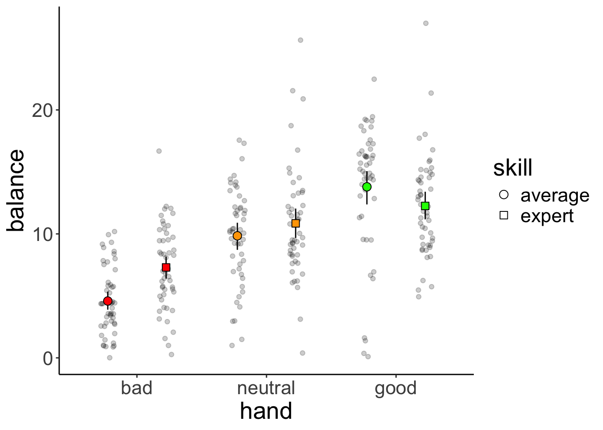
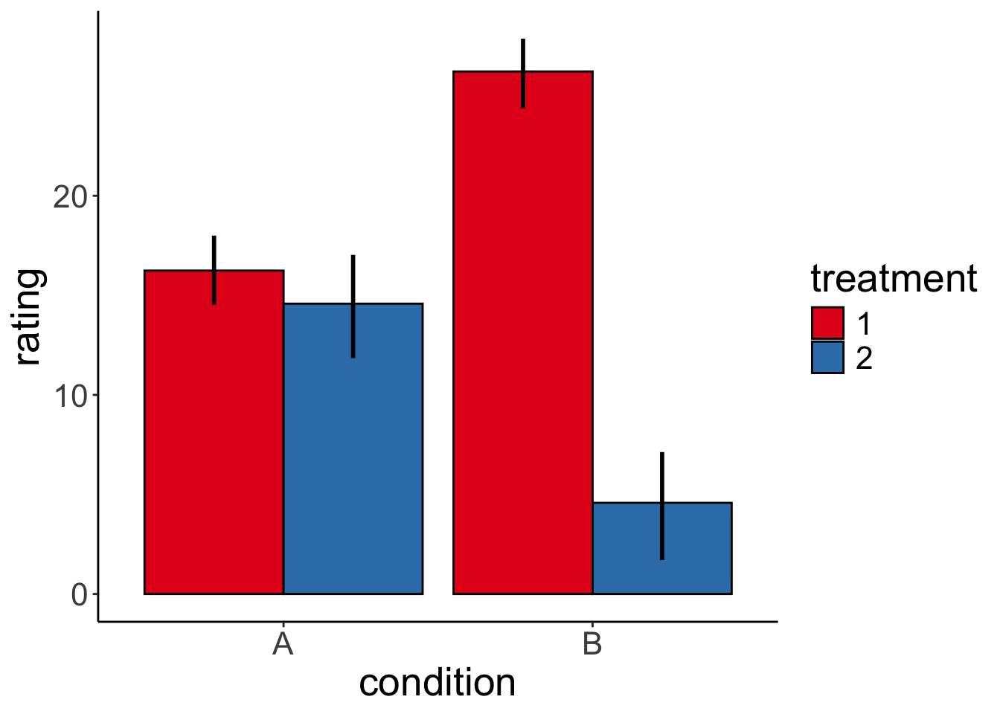

Chapter 12 Linear model 3
12.1 Learning goals
- Linear model with one multi-level categorical predictor (One-way ANOVA).
- Linear model with multiple categorical predictors (N-way ANOVA).
12.2 Load packages and set plotting theme
library("knitr") # for knitting RMarkdown
library("kableExtra") # for making nice tables
library("janitor") # for cleaning column names
library("broom") # for tidying up linear models
library("car") # for running ANOVAs
library("afex") # also for running ANOVAs
library("emmeans") # for calculating constrasts
library("tidyverse") # for wrangling, plotting, etc. 12.3 Load data sets
df.poker = read_csv("data/poker.csv") %>%
mutate(skill = factor(skill,
levels = 1:2,
labels = c("expert", "average")),
skill = fct_relevel(skill, "average", "expert"),
hand = factor(hand,
levels = 1:3,
labels = c("bad", "neutral", "good")),
limit = factor(limit,
levels = 1:2,
labels = c("fixed", "none")),
participant = 1:n()) %>%
select(participant, everything())Selection of the data:
df.poker %>%
group_by(skill, hand, limit) %>%
filter(row_number() < 3) %>%
head(10) %>%
kable(digits = 2) %>%
kable_styling(bootstrap_options = "striped",
full_width = F)| participant | skill | hand | limit | balance |
|---|---|---|---|---|
| 1 | expert | bad | fixed | 4.00 |
| 2 | expert | bad | fixed | 5.55 |
| 26 | expert | bad | none | 5.52 |
| 27 | expert | bad | none | 8.28 |
| 51 | expert | neutral | fixed | 11.74 |
| 52 | expert | neutral | fixed | 10.04 |
| 76 | expert | neutral | none | 21.55 |
| 77 | expert | neutral | none | 3.12 |
| 101 | expert | good | fixed | 10.86 |
| 102 | expert | good | fixed | 8.68 |
12.4 One-way ANOVA
12.4.1 Visualization
df.poker %>%
ggplot(mapping = aes(x = hand,
y = balance,
fill = hand)) +
geom_point(alpha = 0.2,
position = position_jitter(height = 0, width = 0.1)) +
stat_summary(fun.data = "mean_cl_boot",
geom = "linerange",
size = 1) +
stat_summary(fun = "mean",
geom = "point",
shape = 21,
size = 4) +
labs(y = "final balance (in Euros)") +
scale_fill_manual(values = c("red", "orange", "green")) +
theme(legend.position = "none")Warning: Using `size` aesthetic for lines was deprecated in ggplot2 3.4.0.
ℹ Please use `linewidth` instead.
This warning is displayed once every 8 hours.
Call `lifecycle::last_lifecycle_warnings()` to see where this warning was generated.12.4.2 Model fitting
We pass the result of the lm() function to anova() to calculate an analysis of variance like so:
Analysis of Variance Table
Response: balance
Df Sum Sq Mean Sq F value Pr(>F)
hand 2 2559.4 1279.7 75.703 < 2.2e-16 ***
Residuals 297 5020.6 16.9
---
Signif. codes: 0 '***' 0.001 '**' 0.01 '*' 0.05 '.' 0.1 ' ' 112.4.3 Hypothesis test
The F-test reported by the ANOVA compares the fitted model with a compact model that only predicts the grand mean:
# fit the models
fit_c = lm(formula = balance ~ 1, data = df.poker)
fit_a = lm(formula = balance ~ hand, data = df.poker)
# compare via F-test
anova(fit_c, fit_a)Analysis of Variance Table
Model 1: balance ~ 1
Model 2: balance ~ hand
Res.Df RSS Df Sum of Sq F Pr(>F)
1 299 7580.0
2 297 5020.6 2 2559.4 75.703 < 2.2e-16 ***
---
Signif. codes: 0 '***' 0.001 '**' 0.01 '*' 0.05 '.' 0.1 ' ' 112.4.4 Visualize the model’s predictions
Here is the model prediction of the compact model:
set.seed(1)
df.plot = df.poker %>%
mutate(hand_jitter = 1 + runif(n(), min = -0.25, max = 0.25))
df.augment = fit_c %>%
augment() %>%
clean_names() %>%
bind_cols(df.plot %>%
select(hand, hand_jitter))
ggplot(data = df.plot,
mapping = aes(x = hand_jitter,
y = balance,
fill = hand)) +
geom_hline(yintercept = mean(df.poker$balance)) +
geom_point(alpha = 0.5) +
geom_segment(data = df.augment,
mapping = aes(xend = hand_jitter,
yend = fitted),
alpha = 0.2) +
labs(y = "balance") +
theme(legend.position = "none",
axis.text.x = element_blank(),
axis.title.x = element_blank())
Note that since we have a categorical variable here, we don’t really have a continuous x-axis. I’ve just jittered the values so it’s easier to show the residuals.
And here is the prediction of the augmented model (which predicts different means for each group).
set.seed(1)
df.plot = df.poker %>%
mutate(hand_jitter = hand %>% as.numeric(),
hand_jitter = hand_jitter + runif(n(), min = -0.4, max = 0.4))
df.tidy = fit_a %>%
tidy() %>%
select(where(is.numeric)) %>%
mutate(across(.fns = ~ round(., digits = 2)))Warning: There was 1 warning in `mutate()`.
ℹ In argument: `across(.fns = ~round(., digits = 2))`.
Caused by warning:
! Using `across()` without supplying `.cols` was deprecated in dplyr 1.1.0.
ℹ Please supply `.cols` instead.df.augment = fit_a %>%
augment() %>%
clean_names() %>%
bind_cols(df.plot %>%
select(hand_jitter))
ggplot(data = df.plot,
mapping = aes(x = hand_jitter,
y = balance,
color = hand)) +
geom_point(alpha = 0.8) +
geom_segment(data = NULL,
mapping = aes(x = 0.6,
xend = 1.4,
y = df.tidy$estimate[1],
yend = df.tidy$estimate[1]),
color = "red",
size = 1) +
geom_segment(data = NULL,
aes(x = 1.6,
xend = 2.4,
y = df.tidy$estimate[1] + df.tidy$estimate[2],
yend = df.tidy$estimate[1] + df.tidy$estimate[2]),
color = "orange",
size = 1) +
geom_segment(data = NULL,
aes(x = 2.6,
xend = 3.4,
y = df.tidy$estimate[1] + df.tidy$estimate[3],
yend = df.tidy$estimate[1] + df.tidy$estimate[3]),
color = "green",
size = 1) +
geom_segment(data = df.augment,
aes(xend = hand_jitter,
y = balance,
yend = fitted),
alpha = 0.3) +
labs(y = "balance") +
scale_color_manual(values = c("red", "orange", "green")) +
scale_x_continuous(breaks = 1:3, labels = c("bad", "neutral", "good")) +
theme(legend.position = "none",
axis.title.x = element_blank())
The vertical lines illustrate the residual sum of squares.
We can illustrate the model sum of squares like so:
set.seed(1)
df.plot = df.poker %>%
mutate(hand_jitter = hand %>% as.numeric(),
hand_jitter = hand_jitter + runif(n(), min = -0.4, max = 0.4)) %>%
group_by(hand) %>%
mutate(mean_group = mean(balance)) %>%
ungroup() %>%
mutate(mean_grand = mean(balance))
df.means = df.poker %>%
group_by(hand) %>%
summarize(mean = mean(balance)) %>%
pivot_wider(names_from = hand,
values_from = mean)
ggplot(data = df.plot,
mapping = aes(x = hand_jitter,
y = mean_group,
color = hand)) +
geom_point(alpha = 0.8) +
geom_segment(data = NULL,
mapping = aes(x = 0.6,
xend = 1.4,
y = df.means$bad,
yend = df.means$bad),
color = "red",
size = 1) +
geom_segment(data = NULL,
mapping = aes(x = 1.6,
xend = 2.4,
y = df.means$neutral,
yend = df.means$neutral),
color = "orange",
size = 1) +
geom_segment(data = NULL,
mapping = aes(x = 2.6,
xend = 3.4,
y = df.means$good,
yend = df.means$good),
color = "green",
size = 1) +
geom_segment(mapping = aes(xend = hand_jitter,
y = mean_group,
yend = mean_grand),
alpha = 0.3) +
geom_hline(yintercept = mean(df.poker$balance),
size = 1) +
labs(y = "balance") +
scale_color_manual(values = c("red", "orange", "green")) +
scale_x_continuous(breaks = 1:3, labels = c("bad", "neutral", "good")) +
scale_y_continuous(breaks = c(0, 10, 20), labels = c(0, 10, 20), limits = c(0, 25)) +
theme(legend.position = "none",
axis.title.x = element_blank())
This captures the variance in the data that is accounted for by the hand variable.
Just for kicks, let’s calculate our cherished proportion of reduction in error PRE:
df.c = fit_c %>%
augment() %>%
clean_names() %>%
summarize(sse = sum(resid^2) %>% round)
df.a = fit_a %>%
augment() %>%
clean_names() %>%
summarize(sse = sum(resid^2) %>% round)
pre = 1 - df.a$sse/df.c$sse
print(pre %>% round(2))[1] 0.34Note that this is the same as the \(R^2\) for the augmented model:
Call:
lm(formula = balance ~ hand, data = df.poker)
Residuals:
Min 1Q Median 3Q Max
-12.9264 -2.5902 -0.0115 2.6573 15.2834
Coefficients:
Estimate Std. Error t value Pr(>|t|)
(Intercept) 5.9415 0.4111 14.451 < 2e-16 ***
handneutral 4.4051 0.5815 7.576 4.55e-13 ***
handgood 7.0849 0.5815 12.185 < 2e-16 ***
---
Signif. codes: 0 '***' 0.001 '**' 0.01 '*' 0.05 '.' 0.1 ' ' 1
Residual standard error: 4.111 on 297 degrees of freedom
Multiple R-squared: 0.3377, Adjusted R-squared: 0.3332
F-statistic: 75.7 on 2 and 297 DF, p-value: < 2.2e-1612.4.5 Dummy coding
Let’s check that we understand how dummy-coding works for a variable with more than 2 levels:
# dummy code the hand variable
df.poker = df.poker %>%
mutate(hand_neutral = ifelse(hand == "neutral", 1, 0),
hand_good = ifelse(hand == "good", 1, 0))
# show the dummy coded variables
df.poker %>%
select(participant, contains("hand"), balance) %>%
group_by(hand) %>%
top_n(3) %>%
head(10) %>%
kable(digits = 3) %>%
kable_styling(bootstrap_options = "striped",
full_width = F)Selecting by balance| participant | hand | hand_neutral | hand_good | balance |
|---|---|---|---|---|
| 31 | bad | 0 | 0 | 12.22 |
| 46 | bad | 0 | 0 | 12.06 |
| 50 | bad | 0 | 0 | 16.68 |
| 76 | neutral | 1 | 0 | 21.55 |
| 87 | neutral | 1 | 0 | 20.89 |
| 89 | neutral | 1 | 0 | 25.63 |
| 127 | good | 0 | 1 | 26.99 |
| 129 | good | 0 | 1 | 21.36 |
| 283 | good | 0 | 1 | 22.48 |
# fit the model
fit.tmp = lm(balance ~ 1 + hand_neutral + hand_good, df.poker)
# show the model summary
fit.tmp %>%
summary()
Call:
lm(formula = balance ~ 1 + hand_neutral + hand_good, data = df.poker)
Residuals:
Min 1Q Median 3Q Max
-12.9264 -2.5902 -0.0115 2.6573 15.2834
Coefficients:
Estimate Std. Error t value Pr(>|t|)
(Intercept) 5.9415 0.4111 14.451 < 2e-16 ***
hand_neutral 4.4051 0.5815 7.576 4.55e-13 ***
hand_good 7.0849 0.5815 12.185 < 2e-16 ***
---
Signif. codes: 0 '***' 0.001 '**' 0.01 '*' 0.05 '.' 0.1 ' ' 1
Residual standard error: 4.111 on 297 degrees of freedom
Multiple R-squared: 0.3377, Adjusted R-squared: 0.3332
F-statistic: 75.7 on 2 and 297 DF, p-value: < 2.2e-16Here, I’ve directly put the dummy-coded variables as predictors into the lm(). We get the same model as if we used the hand variable instead.
12.4.6 Follow up questions
Here are some follow up questions we may ask about the data.
Are bad hands different from neutral hands?
df.poker %>%
filter(hand %in% c("bad", "neutral")) %>%
lm(formula = balance ~ hand,
data = .) %>%
summary()
Call:
lm(formula = balance ~ hand, data = .)
Residuals:
Min 1Q Median 3Q Max
-9.9566 -2.5078 -0.2365 2.4410 15.2834
Coefficients:
Estimate Std. Error t value Pr(>|t|)
(Intercept) 5.9415 0.3816 15.570 < 2e-16 ***
handneutral 4.4051 0.5397 8.163 3.76e-14 ***
---
Signif. codes: 0 '***' 0.001 '**' 0.01 '*' 0.05 '.' 0.1 ' ' 1
Residual standard error: 3.816 on 198 degrees of freedom
Multiple R-squared: 0.2518, Adjusted R-squared: 0.248
F-statistic: 66.63 on 1 and 198 DF, p-value: 3.758e-14Are neutral hands different from good hands?
df.poker %>%
filter(hand %in% c("neutral", "good")) %>%
lm(formula = balance ~ hand,
data = .) %>%
summary()
Call:
lm(formula = balance ~ hand, data = .)
Residuals:
Min 1Q Median 3Q Max
-12.9264 -2.7141 0.2585 2.7184 15.2834
Coefficients:
Estimate Std. Error t value Pr(>|t|)
(Intercept) 10.3466 0.4448 23.26 < 2e-16 ***
handgood 2.6798 0.6291 4.26 3.16e-05 ***
---
Signif. codes: 0 '***' 0.001 '**' 0.01 '*' 0.05 '.' 0.1 ' ' 1
Residual standard error: 4.448 on 198 degrees of freedom
Multiple R-squared: 0.08396, Adjusted R-squared: 0.07933
F-statistic: 18.15 on 1 and 198 DF, p-value: 3.158e-05Doing the same thing by recoding our hand factor and taking “neutral” to be the reference category:
df.poker %>%
mutate(hand = fct_relevel(hand, "neutral")) %>%
lm(formula = balance ~ hand,
data = .) %>%
summary()
Call:
lm(formula = balance ~ hand, data = .)
Residuals:
Min 1Q Median 3Q Max
-12.9264 -2.5902 -0.0115 2.6573 15.2834
Coefficients:
Estimate Std. Error t value Pr(>|t|)
(Intercept) 10.3466 0.4111 25.165 < 2e-16 ***
handbad -4.4051 0.5815 -7.576 4.55e-13 ***
handgood 2.6798 0.5815 4.609 6.02e-06 ***
---
Signif. codes: 0 '***' 0.001 '**' 0.01 '*' 0.05 '.' 0.1 ' ' 1
Residual standard error: 4.111 on 297 degrees of freedom
Multiple R-squared: 0.3377, Adjusted R-squared: 0.3332
F-statistic: 75.7 on 2 and 297 DF, p-value: < 2.2e-1612.4.7 Variance decomposition
Let’s first run the model
Analysis of Variance Table
Response: balance
Df Sum Sq Mean Sq F value Pr(>F)
hand 2 2559.4 1279.7 75.703 < 2.2e-16 ***
Residuals 297 5020.6 16.9
---
Signif. codes: 0 '***' 0.001 '**' 0.01 '*' 0.05 '.' 0.1 ' ' 112.4.7.1 Calculate sums of squares
And then let’s make sure that we understand how the variance is broken down:
df.poker %>%
mutate(mean_grand = mean(balance)) %>%
group_by(hand) %>%
mutate(mean_group = mean(balance)) %>%
ungroup() %>%
summarize(variance_total = sum((balance - mean_grand)^2),
variance_model = sum((mean_group - mean_grand)^2),
variance_residual = variance_total - variance_model)# A tibble: 1 × 3
variance_total variance_model variance_residual
<dbl> <dbl> <dbl>
1 7580. 2559. 5021.12.4.7.2 Visualize model predictions
12.4.7.2.1 Total variance
set.seed(1)
fit_c = lm(formula = balance ~ 1,
data = df.poker)
df.plot = df.poker %>%
mutate(hand_jitter = 1 + runif(n(), min = -0.25, max = 0.25))
df.augment = fit_c %>%
augment() %>%
clean_names() %>%
bind_cols(df.plot %>% select(hand, hand_jitter))
ggplot(data = df.plot,
mapping = aes(x = hand_jitter,
y = balance,
fill = hand)) +
geom_hline(yintercept = mean(df.poker$balance)) +
geom_point(alpha = 0.5) +
geom_segment(data = df.augment,
aes(xend = hand_jitter,
yend = fitted),
alpha = 0.2) +
labs(y = "balance") +
theme(legend.position = "none",
axis.text.x = element_blank(),
axis.title.x = element_blank())
12.4.7.2.2 Model variance
set.seed(1)
df.plot = df.poker %>%
mutate(hand_jitter = hand %>% as.numeric(),
hand_jitter = hand_jitter + runif(n(), min = -0.4, max = 0.4)) %>%
group_by(hand) %>%
mutate(mean_group = mean(balance)) %>%
ungroup() %>%
mutate(mean_grand = mean(balance))
df.means = df.poker %>%
group_by(hand) %>%
summarize(mean = mean(balance)) %>%
pivot_wider(names_from = hand,
values_from = mean)
ggplot(data = df.plot,
mapping = aes(x = hand_jitter,
y = mean_group,
color = hand)) +
geom_point(alpha = 0.8) +
geom_segment(data = NULL,
aes(x = 0.6,
xend = 1.4,
y = df.means$bad,
yend = df.means$bad),
color = "red",
size = 1) +
geom_segment(data = NULL,
aes(x = 1.6,
xend = 2.4,
y = df.means$neutral,
yend = df.means$neutral),
color = "orange",
size = 1) +
geom_segment(data = NULL,
aes(x = 2.6,
xend = 3.4,
y = df.means$good,
yend = df.means$good),
color = "green",
size = 1) +
geom_segment(aes(xend = hand_jitter,
y = mean_group,
yend = mean_grand),
alpha = 0.3) +
geom_hline(yintercept = mean(df.poker$balance),
size = 1) +
labs(y = "balance") +
scale_color_manual(values = c("red", "orange", "green")) +
scale_x_continuous(breaks = 1:3, labels = c("bad", "neutral", "good")) +
scale_y_continuous(breaks = c(0, 10, 20), labels = c(0, 10, 20), limits = c(0, 25)) +
theme(legend.position = "none",
axis.title.x = element_blank())
12.4.7.2.3 Residual variance
set.seed(1)
fit_a = lm(formula = balance ~ hand,
data = df.poker)
df.plot = df.poker %>%
mutate(hand_jitter = hand %>% as.numeric(),
hand_jitter = hand_jitter + runif(n(), min = -0.4, max = 0.4))
df.tidy = fit_a %>%
tidy() %>%
select(where(is.numeric)) %>%
mutate(across(.fns = ~ round(., digits = 2)))
df.augment = fit_a %>%
augment() %>%
clean_names() %>%
bind_cols(df.plot %>% select(hand_jitter))
ggplot(data = df.plot,
mapping = aes(x = hand_jitter,
y = balance,
color = hand)) +
geom_point(alpha = 0.8) +
geom_segment(data = NULL,
aes(x = 0.6,
xend = 1.4,
y = df.tidy$estimate[1],
yend = df.tidy$estimate[1]),
color = "red",
size = 1) +
geom_segment(data = NULL,
aes(x = 1.6,
xend = 2.4,
y = df.tidy$estimate[1] + df.tidy$estimate[2],
yend = df.tidy$estimate[1] + df.tidy$estimate[2]),
color = "orange",
size = 1) +
geom_segment(data = NULL,
aes(x = 2.6,
xend = 3.4,
y = df.tidy$estimate[1] + df.tidy$estimate[3],
yend = df.tidy$estimate[1] + df.tidy$estimate[3]),
color = "green",
size = 1) +
geom_segment(data = df.augment,
aes(xend = hand_jitter,
y = balance,
yend = fitted),
alpha = 0.3) +
labs(y = "balance") +
scale_color_manual(values = c("red", "orange", "green")) +
scale_x_continuous(breaks = 1:3, labels = c("bad", "neutral", "good")) +
theme(legend.position = "none",
axis.title.x = element_blank())
12.5 Two-way ANOVA
Now let’s take a look at a case where we have multiple categorical predictors.
12.5.1 Visualization
Let’s look at the overall effect of skill:
ggplot(data = df.poker,
mapping = aes(x = skill,
y = balance)) +
geom_point(position = position_jitter(width = 0.2,
height = 0),
alpha = 0.2) +
stat_summary(fun.data = "mean_cl_boot",
geom = "linerange",
color = "black",
position = position_dodge(0.9)) +
stat_summary(fun = "mean",
geom = "point",
color = "black",
position = position_dodge(0.9),
aes(shape = skill),
size = 3,
fill = "black") +
scale_shape_manual(values = c(21, 22)) +
guides(shape = F)Warning: The `<scale>` argument of `guides()` cannot be `FALSE`. Use "none" instead as of ggplot2 3.3.4.
This warning is displayed once every 8 hours.
Call `lifecycle::last_lifecycle_warnings()` to see where this warning was generated.
And now let’s take a look at the means for the full the 3 (hand) x 2 (skill) design:
ggplot(data = df.poker,
mapping = aes(x = hand,
y = balance,
group = skill,
fill = hand)) +
geom_point(position = position_jitterdodge(jitter.width = 0.3,
jitter.height = 0,
dodge.width = 0.9),
alpha = 0.2) +
stat_summary(fun.data = "mean_cl_boot",
geom = "linerange",
color = "black",
position = position_dodge(0.9)) +
stat_summary(fun = "mean",
geom = "point",
aes(shape = skill),
color = "black",
position = position_dodge(0.9),
size = 3) +
scale_fill_manual(values = c("red", "orange", "green")) +
scale_shape_manual(values = c(21, 22)) +
guides(fill = F)
12.5.2 Model fitting
For N-way ANOVAs, we need to be careful about what sums of squares we are using. The standard (based on the SPSS output) is to use type III sums of squares. We set this up in the following way:
lm(formula = balance ~ hand * skill,
data = df.poker,
contrasts = list(hand = "contr.sum",
skill = "contr.sum")) %>%
Anova(type = 3)Anova Table (Type III tests)
Response: balance
Sum Sq Df F value Pr(>F)
(Intercept) 28644.7 1 1772.1137 < 2.2e-16 ***
hand 2559.4 2 79.1692 < 2.2e-16 ***
skill 39.3 1 2.4344 0.1197776
hand:skill 229.0 2 7.0830 0.0009901 ***
Residuals 4752.3 294
---
Signif. codes: 0 '***' 0.001 '**' 0.01 '*' 0.05 '.' 0.1 ' ' 1So, we fit our linear model, but set the contrasts to “contr.sum” (which yields effect coding instead of dummy coding), and then specify the desired type of sums of squares in the Anova() function call.
Alternatively, we could use the afex package and specify the ANOVA like so:
Contrasts set to contr.sum for the following variables: hand, skillAnova Table (Type 3 tests)
Response: balance
Effect df MSE F ges p.value
1 hand 2, 294 16.16 79.17 *** .350 <.001
2 skill 1, 294 16.16 2.43 .008 .120
3 hand:skill 2, 294 16.16 7.08 *** .046 <.001
---
Signif. codes: 0 '***' 0.001 '**' 0.01 '*' 0.05 '+' 0.1 ' ' 1The afex package uses effect coding and type 3 sums of squares by default.
12.5.3 Interpreting interactions
Code I’ve used to generate the different plots in the competition:
set.seed(1)
b0 = 15
nsamples = 30
sd = 5
# simple effect of condition
b1 = 10
b2 = 1
b1_2 = 1
# two simple effects
# b1 = 5
# b2 = -5
# b1_2 = 0
# interaction effect
# b1 = 10
# b2 = 10
# b1_2 = -20
# interaction and simple effect
# b1 = 10
# b2 = 0
# b1_2 = -20
# all three
# b1 = 2
# b2 = 2
# b1_2 = 10
df.data = tibble(
condition = rep(c(0, 1), each = nsamples),
treatment = rep(c(0, 1), nsamples),
rating = b0 + b1 * condition + b2 * treatment + (b1_2 * condition * treatment) + rnorm(nsamples, sd = sd)) %>%
mutate(condition = factor(condition, labels = c("A", "B")),
treatment = factor(treatment, labels = c("1", "2")))
ggplot(df.data,
aes(x = condition,
y = rating,
group = treatment,
fill = treatment)) +
stat_summary(fun = "mean",
geom = "bar",
color = "black",
position = position_dodge(0.9)) +
stat_summary(fun.data = "mean_cl_boot",
geom = "linerange",
size = 1,
position = position_dodge(0.9)) +
scale_fill_brewer(palette = "Set1")
And here is one specific example. Let’s generate the data first:
# make example reproducible
set.seed(1)
# set parameters
nsamples = 30
b0 = 15
b1 = 10 # simple effect of condition
b2 = 0 # simple effect of treatment
b1_2 = -20 # interaction effect
sd = 5
# generate data
df.data = tibble(
condition = rep(c(0, 1), each = nsamples),
treatment = rep(c(0, 1), nsamples),
rating = b0 +
b1 * condition +
b2 * treatment + (b1_2 * condition * treatment) +
rnorm(nsamples, sd = sd)) %>%
mutate(condition = factor(condition, labels = c("A", "B")),
treatment = factor(treatment, labels = c("1", "2")))Show part of the generated data frame:
# show data frame
df.data %>%
group_by(condition, treatment) %>%
filter(row_number() < 3) %>%
ungroup() %>%
kable(digits = 2) %>%
kable_styling(bootstrap_options = "striped",
full_width = F)| condition | treatment | rating |
|---|---|---|
| A | 1 | 11.87 |
| A | 2 | 15.92 |
| A | 1 | 10.82 |
| A | 2 | 22.98 |
| B | 1 | 21.87 |
| B | 2 | 5.92 |
| B | 1 | 20.82 |
| B | 2 | 12.98 |
Plot the data:
# plot data
ggplot(df.data,
aes(x = condition,
y = rating,
group = treatment,
fill = treatment)) +
stat_summary(fun = "mean",
geom = "bar",
color = "black",
position = position_dodge(0.9)) +
stat_summary(fun.data = "mean_cl_boot",
geom = "linerange",
size = 1,
position = position_dodge(0.9)) +
scale_fill_brewer(palette = "Set1")
And check whether we can successfully infer the parameters that we used to generate the data:
# infer parameters
lm(formula = rating ~ 1 + condition + treatment + condition:treatment,
data = df.data) %>%
summary()
Call:
lm(formula = rating ~ 1 + condition + treatment + condition:treatment,
data = df.data)
Residuals:
Min 1Q Median 3Q Max
-10.6546 -3.6343 0.7988 3.3514 8.3953
Coefficients:
Estimate Std. Error t value Pr(>|t|)
(Intercept) 16.244 1.194 13.608 < 2e-16 ***
conditionB 10.000 1.688 5.924 2.02e-07 ***
treatment2 -1.662 1.688 -0.985 0.329
conditionB:treatment2 -20.000 2.387 -8.378 1.86e-11 ***
---
Signif. codes: 0 '***' 0.001 '**' 0.01 '*' 0.05 '.' 0.1 ' ' 1
Residual standard error: 4.623 on 56 degrees of freedom
Multiple R-squared: 0.7473, Adjusted R-squared: 0.7338
F-statistic: 55.21 on 3 and 56 DF, p-value: < 2.2e-1612.5.4 Variance decomposition
Let’s fit the model first:
Analysis of Variance Table
Response: balance
Df Sum Sq Mean Sq F value Pr(>F)
hand 2 2559.4 1279.70 79.1692 < 2.2e-16 ***
skill 1 39.3 39.35 2.4344 0.1197776
hand:skill 2 229.0 114.49 7.0830 0.0009901 ***
Residuals 294 4752.3 16.16
---
Signif. codes: 0 '***' 0.001 '**' 0.01 '*' 0.05 '.' 0.1 ' ' 112.5.4.1 Calculate sums of squares
df.poker %>%
mutate(mean_grand = mean(balance)) %>%
group_by(skill) %>%
mutate(mean_skill = mean(balance)) %>%
group_by(hand) %>%
mutate(mean_hand = mean(balance)) %>%
ungroup() %>%
summarize(variance_total = sum((balance - mean_grand)^2),
variance_skill = sum((mean_skill - mean_grand)^2),
variance_hand = sum((mean_hand - mean_grand)^2),
variance_residual = variance_total - variance_skill - variance_hand)# A tibble: 1 × 4
variance_total variance_skill variance_hand variance_residual
<dbl> <dbl> <dbl> <dbl>
1 7580. 39.3 2559. 4981.12.5.4.2 Visualize model predictions
12.5.4.2.1 Skill factor
set.seed(1)
df.plot = df.poker %>%
mutate(skill_jitter = skill %>% as.numeric(),
skill_jitter = skill_jitter + runif(n(), min = -0.4, max = 0.4)) %>%
group_by(skill) %>%
mutate(mean_group = mean(balance)) %>%
ungroup() %>%
mutate(mean_grand = mean(balance))
df.means = df.poker %>%
group_by(skill) %>%
summarize(mean = mean(balance)) %>%
pivot_wider(names_from = skill,
values_from = mean)
ggplot(data = df.plot,
mapping = aes(x = skill_jitter,
y = mean_group,
color = skill)) +
geom_point(alpha = 0.8) +
geom_segment(data = NULL,
aes(x = 0.6,
xend = 1.4,
y = df.means$average,
yend = df.means$average),
color = "black",
size = 1) +
geom_segment(data = NULL,
aes(x = 1.6,
xend = 2.4,
y = df.means$expert,
yend = df.means$expert),
color = "gray50",
size = 1) +
geom_segment(aes(xend = skill_jitter,
y = mean_group,
yend = mean_grand),
alpha = 0.3) +
geom_hline(yintercept = mean(df.poker$balance),
size = 1) +
labs(y = "balance") +
scale_color_manual(values = c("black", "gray50")) +
scale_x_continuous(breaks = 1:2, labels = c("average", "expert")) +
scale_y_continuous(breaks = c(0, 10, 20), labels = c(0, 10, 20), limits = c(0, 25)) +
theme(legend.position = "none",
axis.title.x = element_blank())
12.6 Two-way ANOVA (with interaction)
Let’s fit a two-way ANOVA with the interaction term.
Analysis of Variance Table
Response: balance
Df Sum Sq Mean Sq F value Pr(>F)
hand 2 2559.4 1279.70 79.1692 < 2.2e-16 ***
skill 1 39.3 39.35 2.4344 0.1197776
hand:skill 2 229.0 114.49 7.0830 0.0009901 ***
Residuals 294 4752.3 16.16
---
Signif. codes: 0 '***' 0.001 '**' 0.01 '*' 0.05 '.' 0.1 ' ' 1And let’s compute how the the sums of squares are decomposed:
df.poker %>%
mutate(mean_grand = mean(balance)) %>%
group_by(skill) %>%
mutate(mean_skill = mean(balance)) %>%
group_by(hand) %>%
mutate(mean_hand = mean(balance)) %>%
group_by(hand, skill) %>%
mutate(mean_hand_skill = mean(balance)) %>%
ungroup() %>%
summarize(variance_total = sum((balance - mean_grand)^2),
variance_skill = sum((mean_skill - mean_grand)^2),
variance_hand = sum((mean_hand - mean_grand)^2),
variance_hand_skill = sum((mean_hand_skill - mean_skill - mean_hand +
mean_grand)^2),
variance_residual = variance_total - variance_skill - variance_hand -
variance_hand_skill)# A tibble: 1 × 5
variance_total variance_skill variance_hand variance_hand_skill
<dbl> <dbl> <dbl> <dbl>
1 7580. 39.3 2559. 229.
# ℹ 1 more variable: variance_residual <dbl>12.8 Session info
Information about this R session including which version of R was used, and what packages were loaded.
R version 4.3.2 (2023-10-31)
Platform: aarch64-apple-darwin20 (64-bit)
Running under: macOS Sonoma 14.1.2
Matrix products: default
BLAS: /Library/Frameworks/R.framework/Versions/4.3-arm64/Resources/lib/libRblas.0.dylib
LAPACK: /Library/Frameworks/R.framework/Versions/4.3-arm64/Resources/lib/libRlapack.dylib; LAPACK version 3.11.0
locale:
[1] en_US.UTF-8/en_US.UTF-8/en_US.UTF-8/C/en_US.UTF-8/en_US.UTF-8
time zone: America/Los_Angeles
tzcode source: internal
attached base packages:
[1] stats graphics grDevices utils datasets methods base
other attached packages:
[1] lubridate_1.9.3 forcats_1.0.0 stringr_1.5.1 dplyr_1.1.4
[5] purrr_1.0.2 readr_2.1.4 tidyr_1.3.0 tibble_3.2.1
[9] ggplot2_3.4.4 tidyverse_2.0.0 emmeans_1.9.0 afex_1.3-0
[13] lme4_1.1-35.1 Matrix_1.6-4 car_3.1-2 carData_3.0-5
[17] broom_1.0.5 janitor_2.2.0 kableExtra_1.3.4 knitr_1.45
loaded via a namespace (and not attached):
[1] tidyselect_1.2.0 viridisLite_0.4.2 farver_2.1.1
[4] fastmap_1.1.1 rpart_4.1.23 digest_0.6.33
[7] timechange_0.2.0 estimability_1.4.1 lifecycle_1.0.4
[10] cluster_2.1.6 magrittr_2.0.3 compiler_4.3.2
[13] Hmisc_5.1-1 rlang_1.1.2 sass_0.4.8
[16] tools_4.3.2 utf8_1.2.4 yaml_2.3.8
[19] data.table_1.14.10 labeling_0.4.3 htmlwidgets_1.6.4
[22] bit_4.0.5 RColorBrewer_1.1-3 plyr_1.8.9
[25] xml2_1.3.6 abind_1.4-5 foreign_0.8-86
[28] withr_2.5.2 numDeriv_2016.8-1.1 nnet_7.3-19
[31] grid_4.3.2 fansi_1.0.6 xtable_1.8-4
[34] colorspace_2.1-0 scales_1.3.0 MASS_7.3-60
[37] cli_3.6.2 mvtnorm_1.2-4 rmarkdown_2.25
[40] crayon_1.5.2 generics_0.1.3 rstudioapi_0.15.0
[43] httr_1.4.7 reshape2_1.4.4 tzdb_0.4.0
[46] minqa_1.2.6 cachem_1.0.8 splines_4.3.2
[49] rvest_1.0.3 parallel_4.3.2 base64enc_0.1-3
[52] vctrs_0.6.5 boot_1.3-28.1 webshot_0.5.5
[55] jsonlite_1.8.8 bookdown_0.37 hms_1.1.3
[58] bit64_4.0.5 htmlTable_2.4.2 Formula_1.2-5
[61] systemfonts_1.0.5 jquerylib_0.1.4 glue_1.6.2
[64] nloptr_2.0.3 stringi_1.8.3 gtable_0.3.4
[67] lmerTest_3.1-3 munsell_0.5.0 pillar_1.9.0
[70] htmltools_0.5.7 R6_2.5.1 vroom_1.6.5
[73] evaluate_0.23 lattice_0.22-5 highr_0.10
[76] backports_1.4.1 snakecase_0.11.1 bslib_0.6.1
[79] Rcpp_1.0.11 checkmate_2.3.1 gridExtra_2.3
[82] svglite_2.1.3 coda_0.19-4 nlme_3.1-164
[85] xfun_0.41 pkgconfig_2.0.3